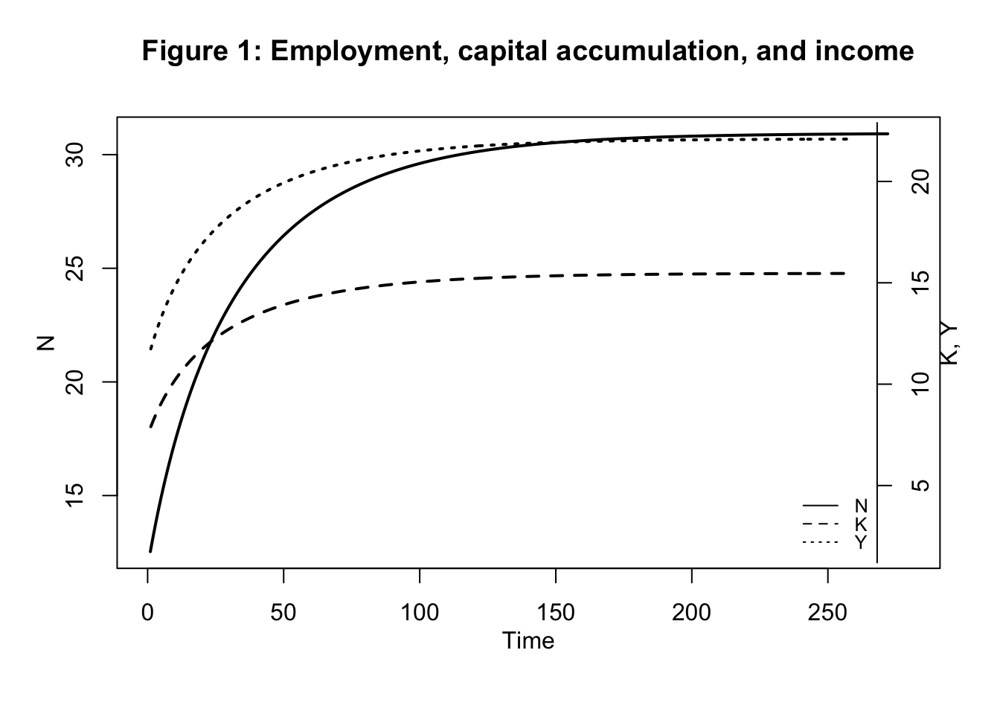
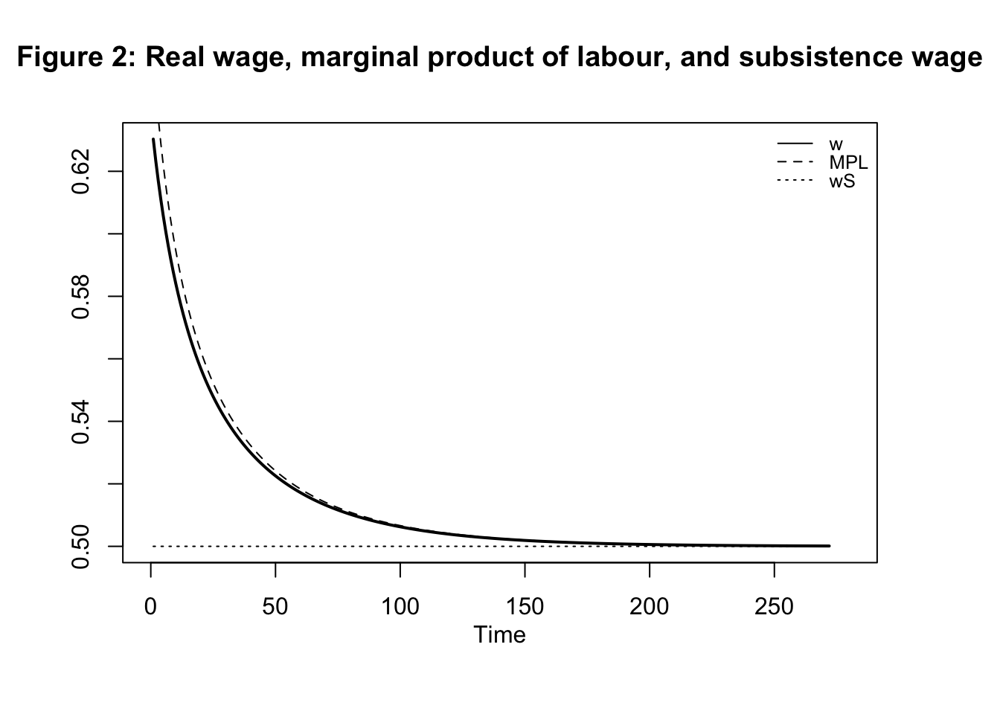
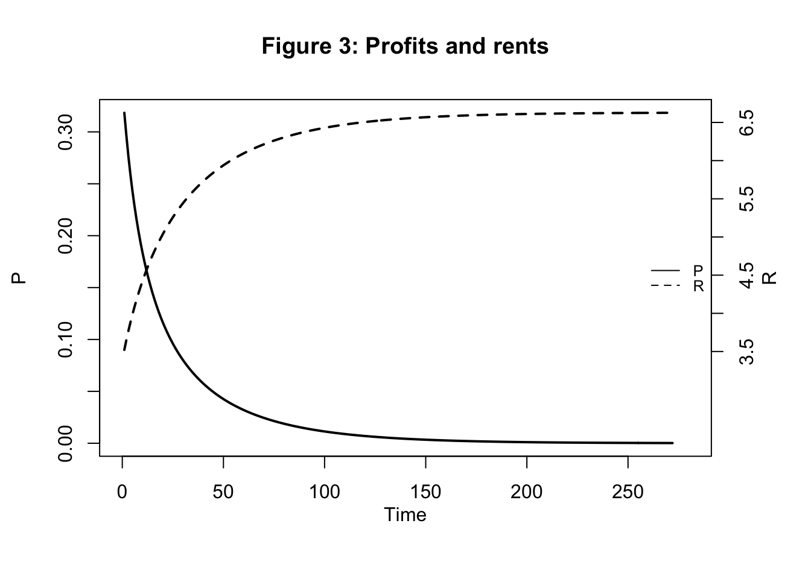
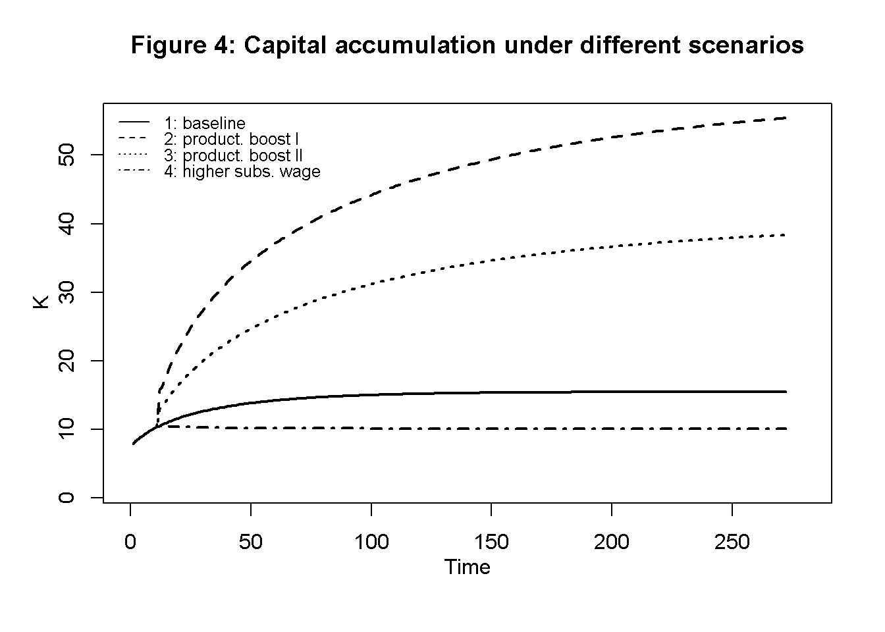
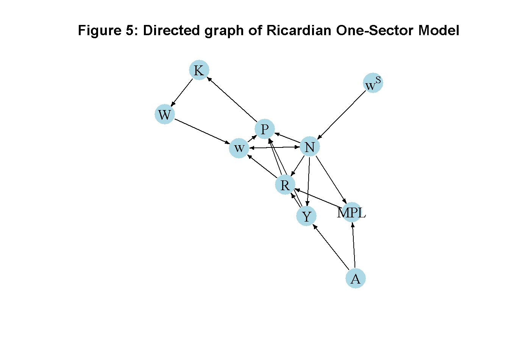

# Clear the environment
rm(list=ls(all=TRUE))
# Set number of periods
Q=500
# Set number of scenarios (including baseline)
S=4
# Set period in which shock/shift will occur
s=20
# Create (S x Q)-matrices that will contain the simulated data
Y=matrix(data=1,nrow=S,ncol=Q) # Income/output
R=matrix(data=1,nrow=S,ncol=Q) # Rent
P=matrix(data=1,nrow=S,ncol=Q) # Profits
N=matrix(data=1,nrow=S,ncol=Q) # employment
w=matrix(data=1,nrow=S,ncol=Q) # real wage
K=matrix(data=1,nrow=S,ncol=Q) # capital stock
MPL=matrix(data=1,nrow=S,ncol=Q) # marginal product of labour
W=matrix(data=1,nrow=S,ncol=Q) # wage bill
N_eq=vector(length=S) # equilibrium population
K_eq=vector(length=S) # equilibrium capital
# Set baseline parameter values
A=matrix(data=2,nrow=S,ncol=Q) # productivity
a=matrix(data=0.7,nrow=S,ncol=Q) # labour elasticity of output
beta=1 # Sensitivity of investment with respect to profits
gamma=5 # adjustment speed of population
wS=matrix(data=0.5,nrow=S,ncol=Q) # subsistence wage rate
# Set parameter values for different scenarios
A[2,s:Q]=3 # scenario 2: productivity boost I
a[3,s:Q]=0.75 # scenario 3: productivity boost II
wS[4,s:Q]=0.6 # scenario 4: increase in subsistence wage
# Initialise variables such that employment and the capital stock are below the equilibrium
N[,1]=1
K[,1]=1
Y[,1]=A[,1]*N[,1]^(a[,1])
MPL[,1]=a[,1]*A[,1]*(N[,1]^(a[,1]-1))
w[,1]=wS[,1]
# Simulate the model by looping over Q time periods for S different scenarios
for (i in 1:S){
for (t in 2:Q){
for (iterations in 1:1000){ # run the model 1000-times in each period
#Model equations
#(1) Output
Y[i,t] = A[i,t]*N[i,t]^(a[i,t])
#(2) Wage bill
W[i,t] = K[i,t]
#(3) Real wage rate
w[i,t] = W[i,t]/N[i,t]
#(4) Marginal product of labour
MPL[i,t] = a[i,t]*A[i,t]*(N[i,t]^(a[i,t]-1))
#(5) Rents
R[i,t] = Y[i,t] - N[i,t]*MPL[i,t]
#(6) Profits
P[i,t] = Y[i,t]- R[i,t] - N[i,t]*w[i,t]
# (7) Capital accumulation
K[i,t] = K[i,t-1] + beta*P[i,t-1]
#(8) Employment/population dynamics
N[i,t] = N[i,t-1] + gamma*(w[i,t-1] - wS[i,t-1])
} # close iterations loop
} # close time loop
} # close scenario loop12 A Ricardian One-Sector Model
Overview
This model captures some key feature of David Ricardo’s theory of growth and distribution as developed in his 1817 book On the Principles of Political Economy and Taxation. The model revolves around the determination of real wages, rents, and profits, and how profitability in turn drives capital accumulation.1 It assumes a corn economy with a single good (corn) that serves both as an investment and consumption good.2 Corn production is subject to diminishing marginal returns. Real wages are driven down to a subsistence level and rent is a differential surplus landowners gain based on the fertility of their land relative to the marginal plot of land (the plot of land where fertility is lowest and no rent is earned). Profits are a residual. As employment increases and more land is utilised, marginal productivity falls and differential rents increase. As a result, profits are driven down and capital accumulation comes to a halt. A stationary state is reached. Landowners are the main beneficiaries of this process. The model is adapted from Pasinetti (1960).
The Model
The following equations describe the model:
\[ Y_t=AN_t^a \tag{12.1}\]
\[ W_t=K_t \tag{12.2}\]
\[ w_t =W_t/N_t \tag{12.3}\]
\[ MPL_t =\frac{\partial Y_t}{\partial N_t} =aAN_t^{a-1} \tag{12.4}\]
\[ R_t = Y_t - N_tMPL_t \tag{12.5}\]
\[ P_t = Y_t - R_t - N_tw_t \tag{12.6}\]
\[ K_t = K_{t-1} + \beta P_{t-1} \tag{12.7}\]
\[ N_t = N_{t-1} + \gamma (w_{t-1} - w^S) \tag{12.8}\]
where \(Y_t\), \(A\), \(N_t\), \(W_t\), \(K_t\),\(w_t\), \(Y_t\), \(MPL_t\), \(R_t\), \(P_t\), and \(w^S\) are real output (measured in units of corn), productivity, employment, the real wage bill (or wage fund), the capital stock, the real wage rate, the marginal product of labour, rents, profits, and the subsistence wage, respectively.
Equation 12.1 is the production function with \(\alpha \in (0,1)\), i.e. exhibiting diminishing marginal returns to labour.3 By Equation 12.2, the wage fund is defined as the capital stock of this model (reflecting the fact that the production of corn only involves labour). Equation 12.3 defines the real wage rate. Equation 12.3 specifies the marginal product of labour. Equation 12.5 captures the determination of (differential) rents as a negative function of the marginal product of labour.4 Thus, the lower the productivity on the marginal land, the higher the rents. In Equation 12.6, profits are determined residually. Capital accumulation in Equation 12.7 is driven by the reinvestment of profits (with \(\beta\) determining the proportion of profits that are reinvested). Finally, Equation 12.8 specifies population dynamics, whereby the population increases whenever the actual real wage is above the subsistence wage, echoing the Malthusian population mechanism.
Simulation
Parameterisation
Table 1 reports the parameterisation and initial values used in the simulation. In line with the Classical tradition, it will be assumed that all profits are reinvested, i.e. \(\beta=1\). Besides a baseline (labelled as scenario 1), three further scenarios will be considered. Scenarios 2 and 3 model two different forms of technological change: an increase in the productivity parameter \(A\) and an increase in the elasticity of output with respect to labour (\(a\)). Scenario 4 considers a higher subsistence wage (\(w^S\)). In all scenarios the population/employment is initialised below its equilibrium value.
Table 1: Parameterisation
| Scenario | \(A\) | \(a\) | \(w^S\) |
|---|---|---|---|
| 1: baseline | 2 | 0.7 | 0.5 |
| 2: productivity boost I (\(A\)) | 3 | 0.7 | 0.5 |
| 3: productivity boost II (\(a\)) | 2 | 0.75 | 0.5 |
| 4: higher subsistence wage (\(w^S\)) | 2 | 0.7 | 0.7 |
Simulation code
Plots
Figure 1 displays employment, capital accumulation, and income for the baseline scenario. Starting from a below-equilibrium level of population, the economy grows in terms of output, capital, and employment but then approaches what Ricardo famously called a ‘stationary state’. Figure 2 shows that during the adjustment phase, the MPL declines reflecting diminishing marginal returns in the production of corn. This captures the idea that a growing economy will have to utilise less fertile lands. The real wage is initially below the MPL, allowing for profits. Over time, the MPL and actual real wage converge to the exogenously given subsistence wage. Figure 3 shows that profits initially increase but are then squeezed to zero as differential rents increase.
# Set start and end periods for plots
Tmax=280
Tmin =10
## Baseline
#Employment, capital accumulation, and income
plot(N[1, Tmin:(Tmax+1)],type="l", lwd=2, lty=1, xlim=range(0:(Tmax)), ylab = '', xlab = '')
title(main="Figure 1: Employment, capital accumulation, and income",ylab = 'N', xlab = 'Time', cex=0.8, line=2)
par(mar = c(5, 4, 4, 4) + 0.3)
par(new = TRUE)
plot(K[1, Tmin:Tmax],type="l", col=1, lwd=2, lty=2, font.main=1,cex.main=1,ylab = '', axes=FALSE,
xlab = '',ylim = range(Y[1, 2:(Tmax+1)]),cex.axis=1,cex.lab=0.75)
lines(Y[1, Tmin:(Tmax+1)],lty=3, lwd=2)
axis(side = 4, at = pretty(range(Y[1, 2:(Tmax+1)])))
mtext("K, Y", side = 4, line = 2)
legend("bottomright", legend=c("N", "K", "Y"),
lty=1:3, cex=0.8, bty = "n", y.intersp=0.8)
# Real wage, subsistence wage, and MPL
plot(w[1, Tmin:(Tmax+1)],type="l", col=1, lwd=2, lty=1, xlim=range(0:(Tmax)), xlab="", ylab="", ylim=range(wS[1, Tmin:Tmax],w[1, Tmin:(Tmax)]))
title(main="Figure 2: Real wage, marginal product of labour, and subsistence wage", xlab = 'Time',cex=0.8,line=2)
lines(MPL[1, Tmin:Tmax],lty=2)
lines(wS[1, Tmin:Tmax],lty=3)
legend("topright", legend=c("w", "MPL", "wS"),
lty=1:3, cex=0.8, bty = "n", y.intersp=0.8)
# Profits and Rents
plot(P[1, Tmin:(Tmax+1)],type="l", col=1, lwd=2, lty=1, xlim=range(0:(Tmax)), xlab="", ylab="", ylim=range(P[1, Tmin:Tmax]))
title(main="Figure 3: Profits and rents", xlab = 'Time',cex=0.8,line=2)
par(mar = c(5, 4, 4, 4) + 0.3)
par(new = TRUE)
plot(R[1, Tmin:(Tmax+1)],type="l", col=1, lwd=2, lty=2, xlim=range(0:(Tmax)), xlab="", ylab="P",
ylim=range(R[1, 3:Tmax]), axes=FALSE)
axis(side = 4, at = pretty(range(R[1, Tmin:(Tmax+1)])))
mtext("R", side = 4, line = 2)
legend("right", legend=c("P", "R"), lty=1:2, cex=0.8, bty = "n", y.intersp=0.8)
Figure 4 displays capital accumulation under the different scenarios described in Table 1. As expected, both forms of technical change boost both the speed of capital accumulation and the equilibrium level of capital. An increase in the subsistence wage reduces the pace of capital accumulation and leads to a lower equilibrium level of capital.
## Different scenarios
# Capital accumulation
plot(K[1, Tmin:(Tmax+1)],type="l", lwd=2, lty=1, xlim=range(0:(Tmax)), ylim=range(K[1, 2:Tmax], K[2, Tmin:Tmax]), ylab = '', xlab = '')
title(main="Figure 4: Capital accumulation under different scenarios",ylab = 'K', xlab = 'Time',cex=0.8, line=2)
lines(K[2, Tmin:(Tmax+1)],lty=2, lwd=2)
lines(K[3, Tmin:(Tmax+1)],lty=3, lwd=2)
lines(K[4, Tmin:(Tmax+1)],lty=4, lwd=2)
legend("topleft", legend=c("1: baseline","2: product. boost I", "3: product. boost II", "4: higher subs. wage"), lty=1:4, cex=0.8, bty = "n", y.intersp=0.8)
Directed graph
Another perspective on the model’s properties is provided by its directed graph. A directed graph consists of a set of nodes that represent the variables of the model. Nodes are connected by directed edges. An edge directed from a node \(x_1\) to node \(x_2\) indicates a causal impact of \(x_1\) on \(x_2\).
## Create directed graph
# Construct auxiliary Jacobian matrix for 10 variables: Y W w MPL R P K N A wS,
# where non-zero elements in regular Jacobian are set to 1 and zero elements are unchanged
M_mat=matrix(c(0,0,0,0,0,0,0,1,1,0,
0,0,0,0,0,0,1,0,0,0,
0,1,0,0,1,0,0,1,0,0,
0,0,0,0,0,0,0,1,1,0,
1,0,0,1,0,0,0,1,0,0,
1,0,1,0,1,0,0,1,0,0,
0,0,0,0,0,1,0,0,0,0,
0,0,1,0,0,0,0,0,0,1,
0,0,0,0,0,0,0,0,0,0,
0,0,0,0,0,0,0,0,0,0), 10,10, byrow=TRUE)
# Create adjacency matrix from transpose of auxiliary Jacobian and add column names
A_mat=t(M_mat)
# Create and plot directed graph from adjacency matrix
library(igraph)
dg= graph_from_adjacency_matrix(A_mat, mode="directed", weighted= NULL)
# Define node labels
V(dg)$name=c("Y", "W", "w", "MPL", "R", "P", "K", "N", "A", expression(w^S))
# Plot directed graph
plot(dg, main="Figure 5: Directed graph of Ricardian One-Sector Model", vertex.size=20, vertex.color="lightblue",
vertex.label.color="black", edge.arrow.size=0.2, edge.width=1.1, edge.size=1.2,
edge.arrow.width=1, edge.color="black", vertex.label.cex=1.2,
vertex.frame.color="NA", margin=-0.05)
In Figure 5, it can be seen that productivity (\(A\)) and the subsistence wage (\(w^S\)) are the key exogenous variables that impact income and the marginal product of labour, and population dynamics, respectively. Most other variables are endogenous and form a closed loop (or cycle) within the system. Profits are a residual. The directed graph illustrates the supply-driven nature of the model, where productivity determines employment and distribution, which in turn feed back into income and capital accumulation. At the same time, income distribution has an exogenous element in the form of the subsistence wage, which feeds into the system.
Analytical discussion
To analyse the dynamics, combine Equation 12.1 to Equation 12.6 and substitute into Equation 12.7. Further use Equation 12.2 and Equation 12.3 in Equation 12.8. This yields the two-dimensional dynamic system in \(K_t\) and \(w_t\):
\[ K_t = (1-\beta)K_{t-1}+\beta(aA N_{t-1}^a ) \] \[ N_t = N_{t-1} +\gamma\left(\frac{K_{t-1}}{N_{t-1}} -w^S\right) \] The Jacobian matrix is given by: \[ J(K, N)=\begin{bmatrix} 1-\beta& \beta a^2AN^{\alpha-1} \\\frac{\gamma}{N} & 1-\frac{\gamma K}{N^2} \end{bmatrix}. \]
From equations Equation 12.7 and Equation 12.8, it can readily be seen that an equilibrium is reached when \[ P^*=0 \] and \[ w^*=w^S. \] Using \(P^*=0\) with Equation 12.5 and Equation 12.6, yields \(w^*=w^S=MPL\). Thus, in equilibrium, profits are zero, and the real wage is equal to the MPL and the subsistence wage. Setting \(K_t=K_{t-1}\) and \(N_t=N_{t-1}\), we can further derive:
\[ K^*=aA\left(\frac{w^S}{aA}\right)^{-\frac{a}{1-a}} \] and
\[ N^*=\left(\frac{w^S}{aA}\right)^{-\frac{1}{1-a}} \] With this, we can evaluate the Jacobian at the steady state: \[ J(K^*, N^*)=\begin{bmatrix} 1-\beta & \beta a w^S \\ \gamma \left(\frac{w^S}{aA}\right)^{\frac{1}{1-a}} & 1-\gamma aA \left(\frac{w^S}{aA}\right)^{\frac{2-a}{1-a}} \end{bmatrix}. \] For the system to be stable, both eigenvalues of the Jacobian need to be inside the unit circle. This requires the following three conditions to hold:
\[ 1+tr(J)+det(J)>0 \] \[ 1+tr(J)-det(J)>0 \] \[ 1-det(J)>0, \] where \(tr(J)\) is the trace and \(det(J)\) is the determinant of the Jacobian.
Let us consider the Classical case where \(\beta=1\), i.e. all profits are reinvested. Then we have
\[ det(J)=-aw^S \gamma \left(\frac{w^S}{aA}\right)^{\frac{1}{1-a}}<0, \] so that the third condition is always satisfied and it is the first one that is binding. The first condition then becomes
\[ 2-\gamma a \left[ A \left(\frac{w^S}{aA}\right)^{\frac{2-a}{1-a}} + w^S\left(\frac{w^S}{aA}\right)^{\frac{1}{1-a}} \right]>0 \]
We can check the analytical solutions and stability conditions numerically:
# Calculate equilibrium solutions
for (i in 1:S){
N_eq[i]=(wS[i,Q]/(a[i,Q]*A[i,Q]))^(-1/(1-a[i,Q]))
K_eq[i]=a[i,Q]*A[i,Q]*(wS[i,Q]/(a[i,Q]*A[i,Q]))^(-a[i,Q]/(1-a[i,Q]))
}
# Compare with numerical solutions (here only for baseline)
N_eq[1][1] 30.94046N[1,Q][1] 30.94031K_eq[1][1] 15.47023K[1,Q][1] 15.47018### Examine model properties (here for the baseline scenario only)
# Construct Jacobian matrix at the equilibrium
J=matrix(c(1-beta, beta*a[1,Q]*wS[1,Q],
beta*(wS[1,Q]/(a[1,Q]*A[1,Q]))^(1/(1-a[1,Q])),
1-gamma*a[1,Q]*A[1,Q]*(wS[1,Q]/(a[1,Q]*A[1,Q]))^((2-a[1,Q])/(1-a[1,Q]))), 2, 2, byrow=TRUE)
# Obtain eigenvalues
ev=eigen(J)
(values = ev$values)[1] 0.93134557 -0.01214592# Obtain determinant and trace
det=det(J) # determinant
tr=sum(diag(J)) # trace
#Check general stability conditions
print(1+tr+det>0)[1] TRUEprint(1-tr+det>0)[1] TRUEprint(1-det>0)[1] TRUE# Check specific stability condition for the case beta=1
for (i in 1:S){
print(paste0("Scenario ", i, ":"))
print(2-gamma*a[i,Q]*(A[i,Q]*(wS[i,Q]/(a[i,Q]*A[i,Q]))^((2-a[i,Q])/(1-a[i,Q]))
+ wS[i,Q]*(wS[i,Q]/(a[i,Q]*A[i,Q]))^(1/(1-a[i,Q])))>0)
}[1] "Scenario 1:"
[1] TRUE
[1] "Scenario 2:"
[1] TRUE
[1] "Scenario 3:"
[1] TRUE
[1] "Scenario 4:"
[1] TRUEReferences
Foley, Duncan K. 2006. Adam’s Fallacy. A Guide to Economic Theology. Cambridge, MA / London: Harvard University Press.
Pasinetti, Luigi L. 1960. “A Mathematical Formulation of the Ricardian System.” The Review of Economic Studies 27 (2): 78–98. https://doi.org/10.2307/2296129.
See chapter 2 of Foley (2006) for an excellent introduction.↩︎
A two-sector extension of the model can be found here XXX.↩︎
Pasinetti (1960) specifies a generic function \(f(N_t)\) with \(f(0) \geq\) 0, \(f'(0) > w^*\), and \(f''(N_t) < 0\). Equation 12.1 satisfies these conditions.↩︎
Equation 12.5 is based on the definition of total rent as the sum of the net gains of the non-marginal landowners. See Pasinetti (1960) for a formal derivation.↩︎